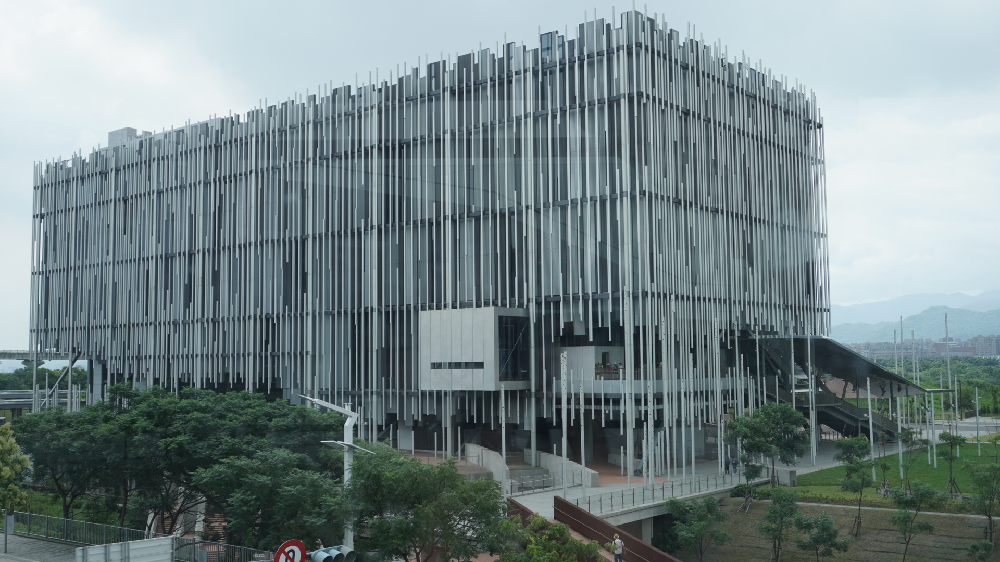
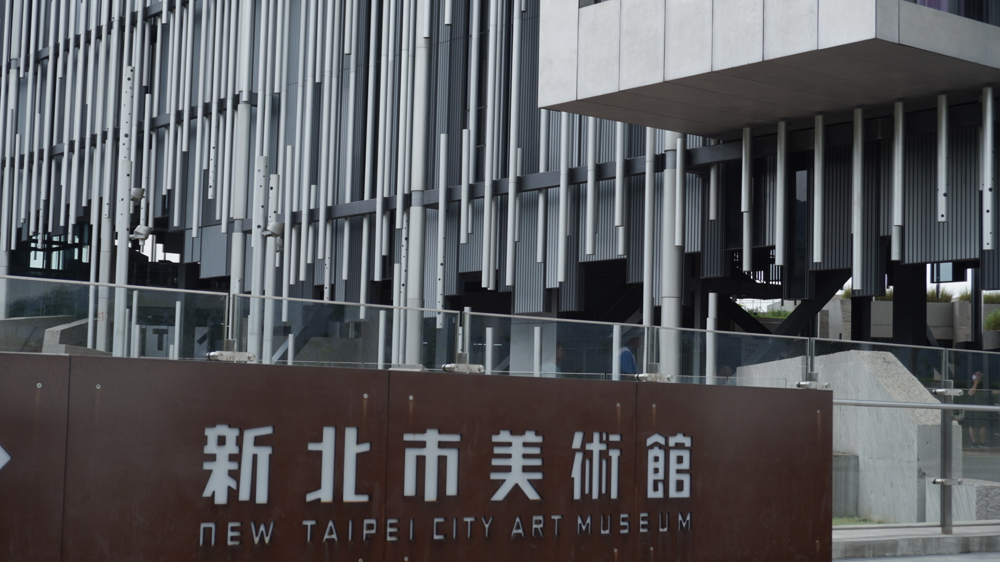
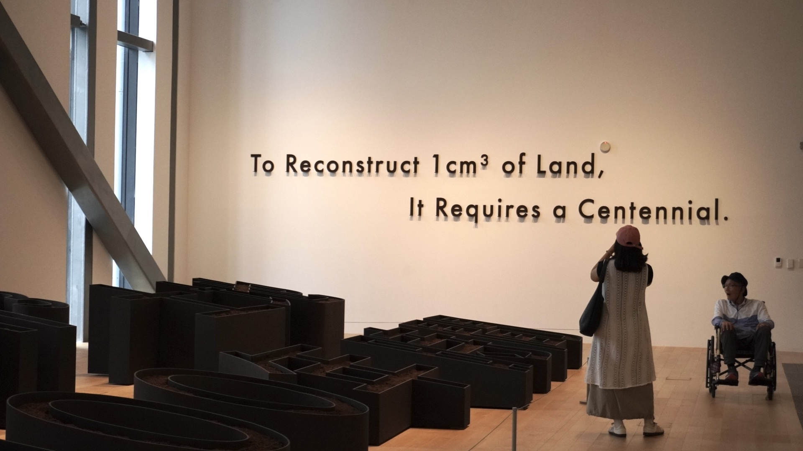
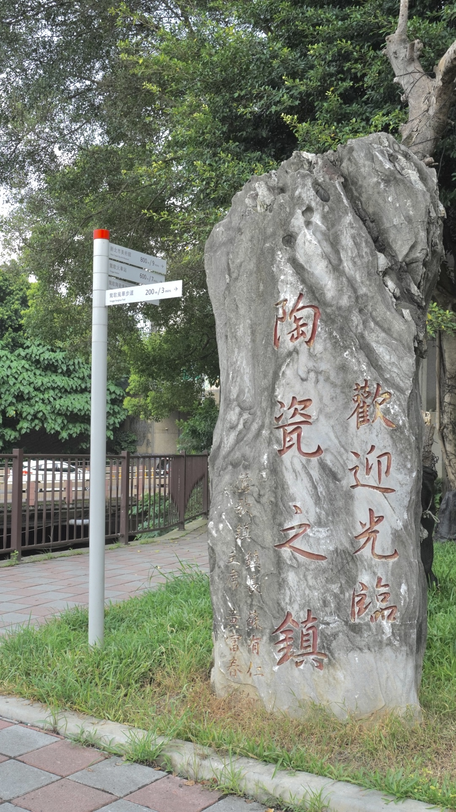
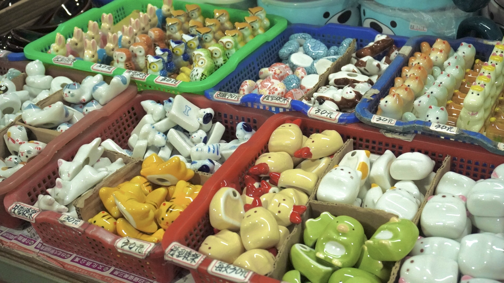
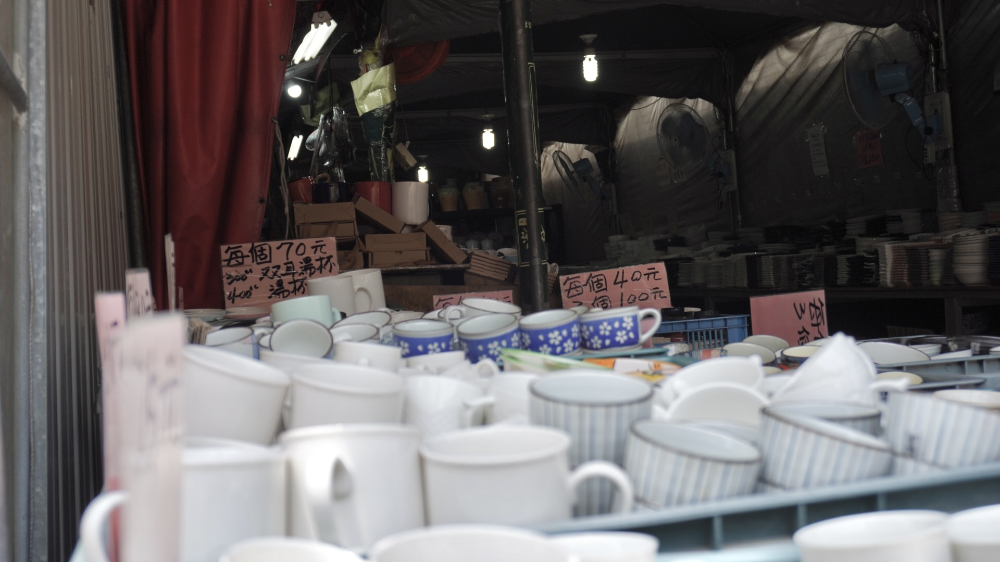

新北市鶯歌區
基本資訊
位於新北市西南部，鄰近三峽區與板橋區，以陶瓷產業聞名，被譽為台灣陶瓷重鎮。鶯歌的陶瓷文化歷史悠久，從傳統手工陶藝到現代工業製陶技術並存，使區域兼具文化傳承與產業活力。 鶯歌區內不僅有陶瓷工廠與創意工作室，也有保存完整的老街與傳統聚落，街道兩旁販售陶藝作品、手工藝品與紀念品，並設有展示館與博物館，讓遊客可以親身體驗陶瓷製作過程。自然環境方面，鶯歌周邊丘陵起伏，河川穿越，使工業與自然景觀相互交融。
推薦景點
| 新北市立美術館
是新北市重要的文化藝術展演空間，致力於推廣當代藝術與公共藝術教育。美術館建築設計現代且具開放感，規劃寬敞展廳與戶外空間，方便舉辦大型展覽、藝術活動與教育工作坊。 館內收藏與展覽涵蓋繪畫、雕塑、裝置藝術及多媒體作品，除了展示國內藝術家的創作，也引進國際展覽，提供觀眾多元的藝術視野。周邊環境綠意盎然，設有廣場與步道，使美術館成為居民休閒與文化參與的公共空間。
| 鶯歌陶瓷老街
是台灣著名的傳統陶瓷聚落，也是鶯歌陶瓷文化的重要展示窗口。老街沿著主要街道延伸，街道兩旁保留早期磚瓦與木造建築，商店密集販售各式陶瓷器皿、手工藝品與紀念品，呈現濃厚的歷史與地方風情。 老街不僅是購買陶瓷的集散地，也結合陶藝文化體驗，許多工作室提供捏陶、彩繪或拉坯等手作課程，讓遊客親自參與創作，體驗陶藝的魅力。街區氛圍融合傳統工藝與現代觀光，巷弄間不時可見展示的藝術作品與創意設計，呈現鶯歌陶瓷文化的延伸與創新。





